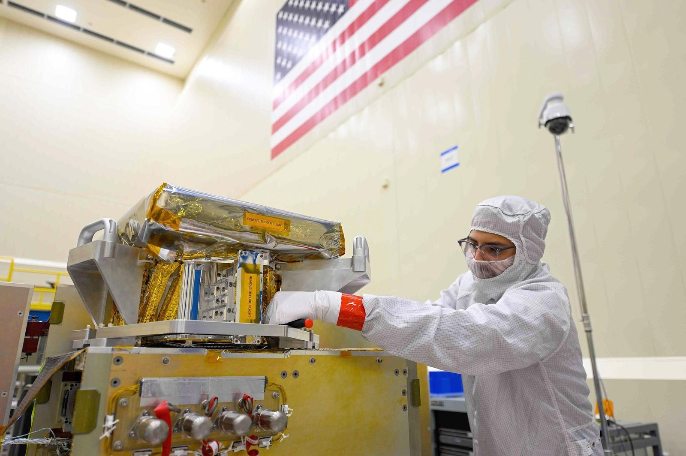
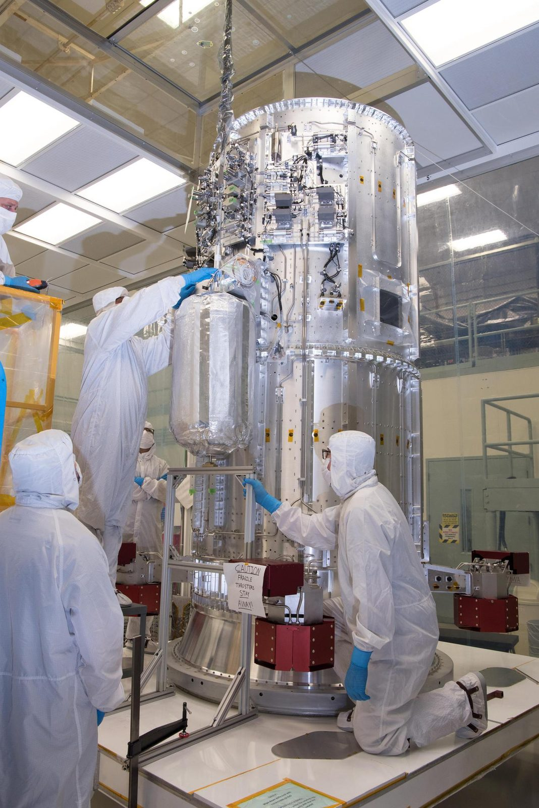

From sensor to science.
We do not sell satellites, we make them succeed. Across more than 150 missions, SSAI engineers have carried spaceborne instruments through every phase: study, design, fabrication, integration and test, verification, and on-orbit operations. The flight hardware belongs to NASA, NOAA, and their primes. The engineering, integration, operations, and data pipelines that make it work are ours.
SSAI specializes in the sensors that must work the first time, in the harshest environments there are.
Our Electrical Systems Engineering Services team, more than 180 engineers and technicians supporting NASA Goddard and other centers, fills the roles missions depend on: Integration & Test Manager, Instrument Systems Engineer, Instrument Manager, subsystem leads for power, communications, and command-and-data-handling, and Deputy Mission Operations Manager.
An instrument is only finished when the data arrives. That end-to-end view, from the first parts-engineering decision to the first calibrated product released from a data center, is the heritage this page reframes as a portfolio.
Engineer. Integrate & test. Operate.
Every instrument in our portfolio passed through some combination of five things our hands can honestly own. We frame our role in the verbs we can stand behind, not the manufacturer's badge, but the discipline that gets a sensor to orbit and keeps it returning science.
- Engineer, parts engineering, electronics, harness design, and subsystem leadership for power, comms, and command-and-data-handling.
- Integrate & test, assembly, environmental and thermal-vacuum verification, and the discipline of making it work the first time.
- Manage, Instrument Manager and I&T Manager roles that carry a sensor through every review gate.
- Operate, payload operations centers and mission-operations support that fly the instrument on-orbit.
- Turn into data, the pipelines that take raw sensor counts to finished, calibrated, archived science products.
 NASA/Goddard Space Flight Center
NASA/Goddard Space Flight Center
Earth-observing instruments
The largest part of the catalog, sensors that read the ocean, the air, the ozone layer, and the land, mission after mission.
OCI, Ocean Color Instrument
SSAI-led electrical engineering on the PACE instrument measuring ocean color, aerosols, and clouds across the visible and near-infrared.
PACE · On-orbitTIRS-2, Thermal Infrared Sensor-2
All phases of development on the Landsat 9 thermal sensor, parts engineering, electronics and harness, integration and test.
Landsat 9 · On-orbitTEMPO
Hourly air-quality measurements over North America. SSAI operates the data pipeline at the ASDC DAAC, from raw observation to public product.
Geostationary · On-orbitMAIA, Multi-Angle Imager for Aerosols
Aerosol and public-health science. Data products are formatted, archived, and distributed by SSAI at the ASDC DAAC.
Earth science · In developmentOMI / OMPS
SSAI built the first GSFC package to carry raw sensor data through to finished ozone and aerosol products, on Aura, Suomi-NPP, and NOAA-20.
Ozone & aerosol · On-orbitVIIRS
Electrical-engineering contributions across the operational weather series on the Joint Polar Satellite System.
JPSS · On-orbit NASA/Goddard Space Flight Center
NASA/Goddard Space Flight Center
Weather & space-weather instruments
Across the GOES-R/S/T/U geostationary series, SSAI ran Integration & Test for the program, the suite that watches Earth's storms and the Sun that drives them.
GLM
Geostationary Lightning Mapper, continuous total-lightning detection across the hemisphere.
SUVI
Solar Ultraviolet Imager, full-disk imaging of the Sun's corona for space-weather forecasting.
EXIS
Extreme Ultraviolet and X-ray Irradiance Sensors, measuring the solar energy that drives the space environment.
SEISS
Space Environment In-Situ Suite, charged-particle measurements for radiation-hazard monitoring.
CCOR
Compact Coronagraph, imaging the solar wind to give early warning of coronal mass ejections.
Magnetometer
The GOES Magnetometer, measuring the geomagnetic field that shapes near-Earth space.
- GOES-U launched June 25, 2024, SSAI led instrument Integration & Test.
- SSAI continues to support GOES operations from NOAA's Satellite Operations Facility.
 NASA/NOAA GOES Project
NASA/NOAA GOES Project
Heritage & deep-space instruments
From a payload operations center SSAI built and runs, to flagship astrophysics electronics, to a lunar spectrometer of our own, and an instrument that flies on aircraft, not only spacecraft.
SAGE III, ISS
SSAI built and operates the SAGE III Payload Operations Center (SPOC), supporting stratospheric ozone and aerosol science from the International Space Station.
ISS · On-orbit · We operate itWide Field Instrument
SSAI-led electrical engineering on a flagship astrophysics instrument for the Nancy Grace Roman Space Telescope.
Roman · In developmentResolve
Electrical-engineering support on the soft X-ray spectrometer aboard the XRISM observatory.
XRISM · On-orbitDSCOVR
Deep-space observation of Earth and the solar wind from the L1 Lagrange point, a million miles from home.
L1 · On-orbitHOLMS
The Heterodyne OH Lunar Miniaturized Spectrometer, an SSAI-developed lunar-surface instrument to measure the Moon's water cycle, flying via NASA CLPS.
CLPS / Artemis · In developmentDLH, Diode Laser Hygrometer
An SSAI airborne instrument that measured water vapor during the 2023 SABRE field campaign, proof our instruments fly on aircraft, not only spacecraft.
Airborne · Flying
NASA/JPL-Caltech NASA/Goddard Space Flight Center
NASA/Goddard Space Flight Center
A portfolio 150 missions deep.
See what each sensor measures, the missions it flies on, and the role SSAI played, from sensor to science.
Our interactive instruments library lets you walk the catalog by domain, platform, and lifecycle status. Each entry follows one schema: name, mission and platform, what it measures, SSAI's role, and where it is now, in development, launched, or on-orbit.
Integration & test, the moment of truth.
A sensor that has never left a clean room has never proven anything. Verification is where SSAI's engineering becomes flight-readiness.

NASA/JPL · Goddard clean roomIntegration and test is the discipline of finding every problem on the ground, where it can still be fixed. SSAI engineers staff the I&T Manager and Instrument Manager roles that own this phase, running thermal-vacuum and environmental verification, closing every review gate, and signing off only when a sensor will work the first time, in the harshest environments there are.
Explore every instrument, mission by mission.
The interactive kit opens the full catalog, filter by domain, platform, and status, and trace each sensor from study to on-orbit.